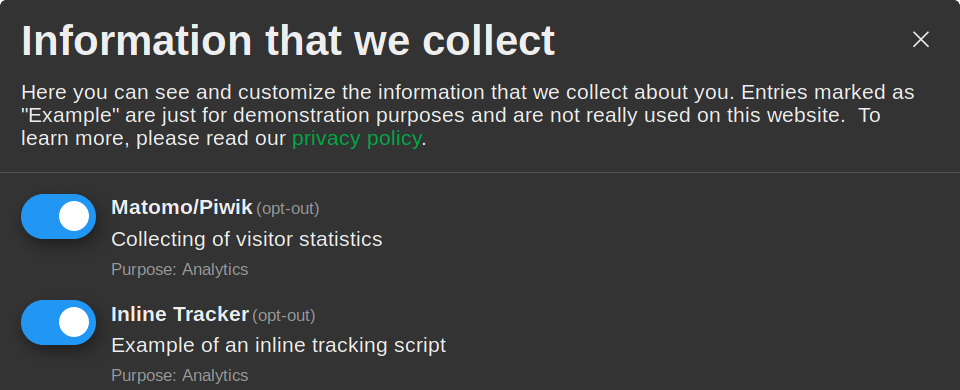

Klaro is simple, unobtrusive and optimized for mobile as well as desktop browsers. It tries to stay out of the way while helping you to be fully transparent and compliant.

Simple & User-Friendly
Klaro is simple, unobtrusive and optimized for mobile as well as desktop browsers. It tries to stay out of the way while helping you to be fully transparent and compliant.
Open Source
Klaro is licensed under a permissive BSD-3 license, which means that you can use it freely for commercial and non-commercial purposes. No hidden fees or restrictions.
Easy to Customize
Klaro can manage both inline and external scripts as well as static tracking elements like images or stylesheet links. New apps can be added with just a few lines of code.
Setting up Klaro on your website is easy and usually takes
less than 10 minutes. All you need to do is write a small
config file, load the klaro.js script and make
a few small changes to your third-party/tracking scripts on your page
so that Klaro can manage them.
Let's get started!
window.klaroConfig = {
privacyPolicy: '/privacy.html',
apps : [
{
name : 'google-analytics',
default: true,
title : 'Google Analytics',
purposes : ['statistics'],
cookies : [/^ga/i],
callback : function(consent, app){
//this is an example callback function...
},
},
//...
],
}First, you need to tell Klaro about the third-party apps and trackers on your site. To do this you write a simple Javascript config. The easiest way to get started is by looking at the annotated config file used for this site and simply modify it according to your needs. No rocket science involved, promised. There are some more examples on Github as well.
# Inline scripts:
<script type="text/plain"
data-type="application/javascript"
data-name="google-analytics">
//...
</script>
# External scripts and resources (img, link, ...):
<script type="text/plain"
data-src="https://analytics.7scientists.com/matomo.js"
data-name="matomo">
</script>
To make sure that no tracking scripts and third-party apps are
loaded without consent, you need to modify your HTML code a tiny bit:
For inline scripts, replace the value of the type attribute with
text/plain (this keeps the browser from executing the script)
and add a data attribute with the original type,
e.g. data-type="application/javascript". Also add a data-name
attribute that matches the name of the given app in your config,
e.g. data-name="googleAnalytics".
For external script do the same, but in addition rename the src
attribute to data-src (this ensures that the browser won't load the script
without the consent of the user). This also works for other tags such
as images/tracking pixels. Just remember to always add a data-name
attribute that matches the name of the app in your config
so that Klaro knows which element belongs to which app.
<script defer type="application/javascript"
src="config.js"></script>
<script defer data-config="klaroConfig" type="application/javascript"
src="https://cdn.kiprotect.com/klaro/latest/klaro.js"></script>Finally, include both the config script as well as the Klaro code on your page. You can defer the loading of the scripts if you like, just make sure the config is initialized when Klaro loads. You can have a look at our simple example page to get an idea of how to do this.
Unstyled Klaro: We also provide a version of Klaro without styles, which is handy in case you want to bring our own or customize ours. Simply download klaro-no-css.js and the minified stylesheet klaro.min.css and include both of them in your HTML. We also have an unminified klaro.css stylesheet, which is great if you want to make modifications to it. You can also look at the SCSS file.
If you want to host Klaro yourself, you can download it here.
show function of the Klaro library, e.g.
like this: <a onClick="klaro.show();return false;">manage your
consents</a>.
klaro.getManager(config)
function. Please not that currently the manager class does not
notify the user interface of changes (yet), so make sure to call
klaro.show(config) to update the UI after making
changes to the consent configuration.
cookies entry in the app config, e.g.
like this: 'cookies' : ['_ga', '_gid', '_gat', /^_gac_.*$/i]. You can
also use regular expressions.
true if consent was given, false if not).
They will be called when Klaro is loaded as well as each time the user updates
the consent choices. This allows you to perform more advanced management
tasks such as calling API endpoints to remove data.
style-prefix
data attribute of the script tag loading the library
to customize the class of the main DIV element of Klaro's UI,
e.g. like this: <script src="klaro.js"
data-style-prefix="my-styles"></script>
This will assign the class my-styles class to Klaro's main DIV element and
disable
all default styles.
Do you have questions or problems? Then just head over to our GitHub page and feel free to open an issue. If you want to contribute to Klaro, feel free to open a pull request (but better ask us for advice before you make large changes). You can also reach us by e-mail at klaro@kiprotect.com. We're looking forward to hear from you!
This website is a project by KIProtect. We use third-party applications and cookies on this site for analytics, demonstration purposes and security. You can review your consents for these here. You have the following rights regarding your personal data: Erasure, rectification, access / download, portability, restriction of processing and filing a complaint at a responsible data protection agency.
You can reach us at privacy@kiprotect.com if you have any questions regarding this website or your personal data.